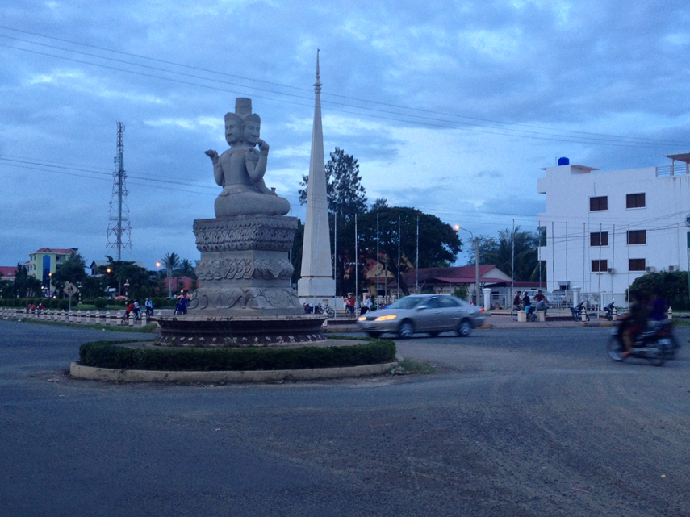

ការពិពណ៏នាអំពី ខេត្តនីមួយៗនៅក្នងប្រទេសកម្ពុជា
ទំព័រដើម
តាកែវ
ភ្នំពេញ
កែប
ព្រះសីហនុ
ស្វាយរៀង
កំពង់ធំ
បាត់ដំបង
ពោធ៏សាត់
សៀមរាប
រតនគីរី
មណ្ឌលគីរី
ក្រចេះ
ត្បូងឃ្មុំ
កំពង់ចាម
ព្រៃវែង
កណ្តាល
ឧត្តរមានជ័យ
កំពង់ឆ្នាំង
កំពង់ស្ពឺ
បន្ទាយមានជ័យ
កោះកុង
ប៉ៃលិន
កំពត
ស្ទឹងត្រែង
ព្រះវិហារ
ទំនាក់ទំនង
ខេត្តព្រៃវែង

ព័ត៌មានសង្ខេបអំពីខេត្តព្រៃវែង
> ខេត្តព្រៃវែង គឺជាខេត្តមួយនៃប្រទេសកម្ពុជា ខេត្តព្រៃវែងជាខេត្តមួយដែលស្ថិតនៅតំបន់ទំនាបកណ្ដាលជាខេត្តដែលផលិតស្រូវច្រើនជាងគេក្នុងប្រទេសកម្ពុជា ខេត្តព្រៃវែងជាខេត្តមួយដែលមានចំនួនប្រជាជន១.១ លាននាក់ច្រើនជាងគេទី៣នៅក្នុងប្រទេសកម្ពុជា ខេត្តព្រៃវែងជាប់នឹងដងទន្លេមេគង្គដែលអំណោយផលក្នុងវិស័យកសិកម្មផងដែរ។
> ខេត្តព្រៃវែង មានទីតាំងនៅភាគនិរតីនៃទន្លេមេគង្គដ៏មានសក្ដានុពល។ ហើយខេត្តព្រៃវែងមានទីរួមខេត្តមួយគឺ ក្រុងព្រៃវែង ។
> ខេត្តព្រៃវែង ជាខេត្តដែលមានទីតាំងស្ថិតនៅភាគខាងកើតរាជធានីភ្នំពេញ មានព្រំប្រទល់ខាងកើតជាប់ខេត្តស្វាយរៀង និងវៀតណាម ខាងជើងជាប់ខេត្តកំពង់ចាម និងខេត្តត្បូងឃ្មុំ ខាងលិចជាប់ខេត្តកណ្តាល និងខាងត្បូងជាប់វៀតណាម។ ខេត្តព្រៃវែង មានច្រកអន្តរជាតិចំនួន ៣ កន្លែងគឺ ទី១ ច្រកអន្តរជាតិម៉ឺនជ័យ (ស្រុកកំចាយមារ) ទី២ ច្រកអន្តរជាតិបន្ទាយចក្រី (ស្រុកព្រះស្តេច) ទី៣ ច្រកអន្តរជាតិកោះរការ (ស្រុកពាមជរ) នឹងមានផ្ទៃដីសរុបគឺ ប្រហែល ៤៨៨៣ គម² ដែលស្មើទៅនិង ២,៧០% នៃផ្ទៃដីសរុបនៃប្រទេសកម្ពុជា (១៨១ ០៣៥ គម²), ដែលក្នុងនោះ ៤៤៥,១៨ គម² ឬ ៩,១២% ជាផ្ទៃដី ដែលប្រជាជន បានតាំងទីលំនៅ, ៣១០០ គម² ឬ ៦៣,៤៩% ជាដី សំរាប់កសិកម្ម, ១៩៤,៦១ គម² ឬ ៣,៩៩% ជាផ្ទៃនៃតំបន់ ព្រៃឈើ, ១០៨២,៨៦ គម² ឬ ២២,១៨% ជាដី សាធារណៈ, ហេដ្ឋារចនាសម្ព័ន្ធ និង ធារាសាស្រ្ត, និង នៅសល់ ៦០,៣៥ គម² ឬ១,២៤% ជា ដី មិនត្រូវបានប្រើប្រាស់ ។
> ខេត្តព្រៃវែង មានស្រុកចំនួន ១១ ស្រុក :
- ស្រុកព្រៃវែង
- ស្រុកកណ្ដាលស្រុក
- ស្រុកតាខ្មៅ
- ស្រុកកណ្តាលប្រជុំ
- ស្រុកកោះសេរ
- ស្រុកមេបុទុម
- ស្រុកគងពិសិដ្ឋ
- ស្រុកបាទដំបង
- ស្រុកវែង
- ស្រុកជ្រោយលៀប
- ស្រុកក្បាលជង្គង់